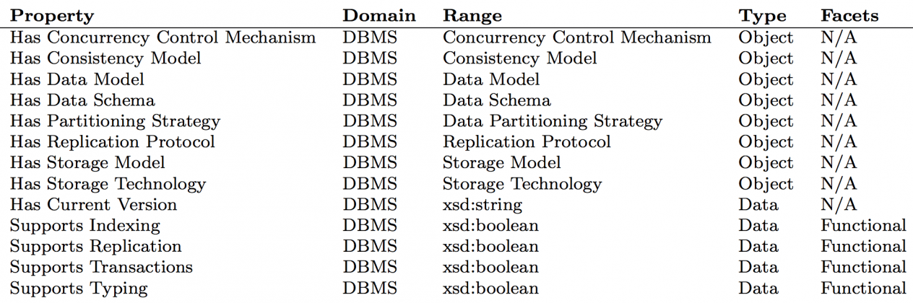
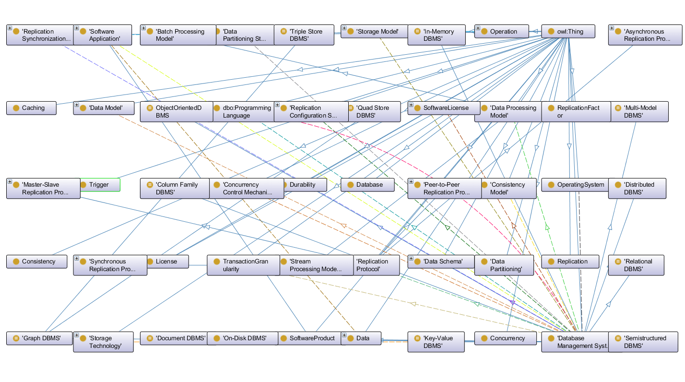
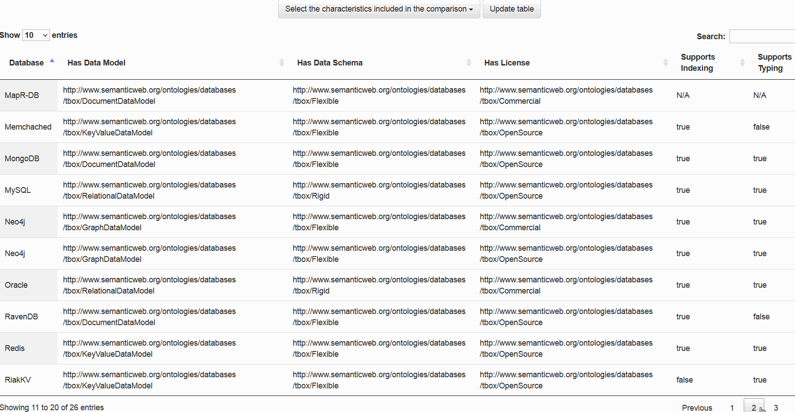

Data publicării: 29.06.2017
Autor articol: Sabin Buraga
Introducere
Conform DB-Engines Ranking, la mijlocul anului 2017 erau operaționale peste 320 de sisteme de management al bazelor de date (DBMSs – DataBase Management Systems), dintre care peste 220 din categoria NoSQL.
Proliferarea soluțiilor de gestiune a datelor, disponibile în diverse formate și respectând o varietate de modele și paradigme de stocare, conduce la dificultăți în ceea ce privește procesele de decizie a alegerii unui sistem de gestiune a datelor într-un context dat, pentru una sau mai multe aplicații software particulare unui domeniu de interes. Pentru a facilita o clasificare – utilă, mai ales, arhitecților de sisteme complexe – se propune, pe baza unei metodologii de proiectare, o ontologie originală menită a reprezenta multiplele caracteristici ale soluțiilor de management al datelor – de exemplu, modelul de date, suportul pentru partiționare, protocolul de replicare, tehnologia de stocare etc. Această ontologie, exprimată prin intermediul limbajului OWL2 (Hitzler et al., 2012), pune la dispoziția specialistului o descriere de nivel înalt a domeniului de cunoaștere specific sistemelor de baze de date. Acest model poate fi ulterior de folos la clasificarea (eventual, automată) a instanțelor mulțimii de sisteme de gestiune descrise de baze de cunoștințe disponibile public, precum DBpedia (Lehmann et al., 2015) sau Wikidata (Vrandečić & Krötzsch, 2014).
O astfel de abordare este aliniată problematicilor actuale ale Web-ului semantic (Allemang & Hendler, 2011; Buraga, 2004), în prezent expuse în cadrul disciplinei “Dezvoltarea aplicațiilor Web” din cadrul programelor de studii de masterat ale Facultății de Informatică, Universitatea “Alexandru Ioan Cuza” din Iași.
Proiectarea modelului conceptual
Din punctul de vedere al ingineriei cunoașterii (knowledge engineering), pentru proiectarea ontologiei s-a ales una dintre cele mai cunoscute metodologii (Noy & McGuinness, 2001) care presupune următoarele etape principale:
- Determinarea scopului.
- Considerarea reutilizării.
- Enumerarea termenilor/conceptelor.
- Definirea taxonomiei de bază.
- Specificarea proprietăților (atributelor).
- Stabilirea caracteristicilor/metadatelor – facets.
- Definirea instanțelor.
- Verificarea anomaliilor.
Determinarea scopului
În ceea ce privește determinarea scopului, domeniul ontologiei de față e reprezentat de sistemele de gestiune a bazelor de date și a conceptelor înrudite, precum: modelele de date, modelele de stocare, tehnologiile de stocare efectivă, suportul pentru tranzacții, aspectele vizând accesul concurent, mecanismele de replicare, licențierea, suportul pentru securitate (e.g., autentificare, autorizare) și multe altele.
Ontologia dezvoltată trebuie să ofere răspunsuri pentru diverse (tipuri de) întrebări:
- Care sunt caracteristicile semnificative ce trebuie considerate pentru a alege un sistem de baze de date?
- Care este modelul de date oferit de un sistem particular?
- MongoDB este un sistem fiabil pentru crearea unei aplicații ce manipulează un volum mare de date (i.e. de ordinul petaocteților)?
- La ce categorii de aplicații Web se pretează un sistem NoSQL?
Considerarea reutilizării
Deși nu exista înaintea demarării acestei cercetări niciun model conceptual privitor la sistemele de baze de date, se pot refolosi diverse concepte și instanțe deja prezente în cadrul unei baze de cunoștințe precum DBpedia.
Astfel, se pot prelua concepte (clase) generale precum: Database, Database_model, Relational_model, Replication, Open_Software_License. De asemenea, se pot adopta diverse concepte vizând organizarea logică a datelor: Relational_database, Graph_database, Column-oriented_DBMS. La nivel de instanțe, se pot prelua cunoștințele legate de sisteme binecunoscute (MySQL, PostgrSQL, Oracle Database).
Enumerarea termenilor
Etapa de enumerare a termenilor presupune alegerea termenilor relevanți din cadrul domeniului modelat.
De exemplu, în ceea ce privește replicarea, pot fi identificate următoarele dimensiuni/caracteristici importante: Replication, Replication Factor, Asynchronous Replication, Synchronous Replication, Replication Configuration Strategy, Master-Slave Replication, Peer-to-Peer Replication, Replication Protocol etc.
Definirea taxonomiei
Acest pas se referă la organizarea termenilor identificați într-o ierarhie coerentă (model taxonomic).
Urmând exemplificarea anterioară, prezentăm un fragment din taxonomia referitoare la procesul de replicare:
Replication Protocol
- Asynchronous Replication Protocol
- Master-Slave Lazy Replication
- Peer-to-Peer Lazy Replication
- Synchronous Replication Protocol
- Peer-to-Peer Eager Replication
- Master-Slave Eager Replication
- …
Specificarea proprietăților
Fiecărei clase trebuie să i se asocieze o serie de proprietăți care sunt folosite pentru a conecta clasele într-o ierarhie sau pentru a asocia claselor diverse valori aparținând unor tipuri de date primitive. De asemenea, după cum vom vedea mai jos, se pot defini anumite restricții utile (e.g., domeniu, interval de valori, cardinalitate etc.) ce ulterior vor fi de folos în efectuarea de deducții pe baza unui sistem de realizare de raționamente automate (reasoner).
Drept exemplicare, iată câteva proprietăți pragmatic utilizate la descrierea – via RDF (Resource Description Framework) – a unui sistem de gestiune a bazelor de date relaționale:
db:MySQL rdf:type owl:NamedIndividual .
db:MySQL rdf:hasDataModel db:RelationalDataModel .
db:MySQL db:hasDataSchema db:Rigid .
db:MySQL db:hasLicense db:OpenSource .
db:MySQL db:supportsIndexing “true”^^xsd:boolean .
db:MySQL db:supportsTyping “true”^^xsd:boolean .
db:MySQL rdfs:label “MySQL” .
Stabilirea caracteristicilor
Acest pas presupune specificarea, pentru fiecare dintre proprietăți, a unor caracteristici (facets) folositoare – de pildă, se pot declara valori obligatorii predefinite pentru anumite clase, caracteristici relaționale (proprietăți simetrice, tranzitive, inverse, funcționale etc.) sau aspecte privind cardinalitatea (eventual, minimă sau maximă).
Tabelul următor precizează o parte dintre acestea, pentru câteva proprietăți de interes:

Spațiul alocat acestui articol nu permite alte detalii, dar cititorul interesat poate consulta resursele bibliografice puse la dispoziție.
Definirea instanțelor
În acest stadiu trebuie create instanțe (indivizi) pentru fiecare clasă modelată din cadrul ontologiei. Popularea cu instanțe se poate realiza fie manual (prin prelucrarea datelor oferite de un sit Web de profil precum DB-Engines), fie extrăgând automat – via interogări SPARQL – cunoștințele oferite de DBpedia și/sau Wikidata (eventual, cu o post-procesare efectuată manual). Pentru alte amănunte, a se parcurge depozitul disponibil pe situl GitHub dedicat ontologiei proiectate (Amariei, 2017).
Verificarea anomaliilor
Posibilele inadvertențe și erori – de natură sintactică și/sau semantică – trebuie detectate înainte de publicarea și (re)utilizarea ontologiei. Din prisma verificării sintactice, am folosit serviciul oferit de Consorțiul Web: RDF Validation Service. Validarea semantică presupune detectarea contradicțiilor sau inconsistențelor logice și a recurs la instrumentul HermiT OWL Reasoner disponibil în cadrul sistemului Protégé folosit pentru modelarea cunoștințelor și exportul ontologiei în diverse formate.
Utilizarea ontologiei concepute
În urma aplicării etapelor descrise de metodologia menționată mai sus, a rezultat o ontologie exprimată în OWL2 și disponibilă public în formatele RDF/XML și Turtle atât la nivel de concepte, cât și la nivel de indivizi – a se consulta (Amariei, 2017a). Acest model conceptual include 773 de axiome, specificând 60 de clase și 38 de proprietăți – a se urmări și vizualizarea exprimată de figura 1.

De asemenea, sunt descriși 90 de indivizi. Suplimentar, este pusă la dispoziție o suită de interogări SPARQL pentru a exemplifica anumite procesări ce pot fi efectuate. Un astfel de exemplu de interogare este următorul:
SELECT ?db ?label
WHERE {
?db db:isSuitableForSoftwareApplication db:RecommendationSoftwareApplication .
?db db:hasDataModel db:TripleDataModel .
?db db:hasLicense db:OpenSource .
?db db:supportsTyping “true”^^xsd:boolean .
?db rdfs:label ?label
}
Pentru a exemplifica diversele utilizări pragmatice ale ontologiei descrise, a fost dezvoltată o aplicație Web menită a oferi suport în procesul de determinare/selectare a unuia sau mai multor sisteme de management al bazelor de date în funcție de anumite cerințe impuse de utilizator. Aplicația de față – recurgând la sistemul StarDog pentru stocarea aserțiunilor RDF/OWL, la Node.js pentru procesarea la nivel de server a datelor și la Bower.js pentru managementul pachetelor software – expune mijloace de comparare interactivă a multiplelor caracteristici vizând diversele sisteme disponibile, inclusiv filtrarea lor.
Captura-ecran următoare exemplifică maniera de raportare a caracteristicilor unor sisteme de gestiune a bazelor de date pe baza proprietăților dorite de utilizator.

Alte detalii de interes, inclusiv cod-sursă demonstrativ, sunt puse la dispoziție de Amariei (2017b).
Concluzii
Articolul a prezentat motivația și principalii pași de modelare conceptuală a principalelor caracteristici vizând sistemele de gestiune a bazelor de date, inclusiv maniera de utilizare pragmatică a ontologiei rezultate în urma cercetărilor efectuate în cadrul programului de pregătire și de susținere a lucrării de master a absolventului Daniel Amariei, îndrumat de Dr. Sabin-Corneliu Buraga.
Referințe bibliografice
- Allemang, D., Hendler, J., Semantic Web for the Working Ontologist (2nd Edition), Morgan Kaufmann, 2011.
- Amariei, D., Databases Ontology, 2017 – disponibilă la http://github.com/danielamariei/databases-ontology
- Amariei, D., Demo App for the DBMSs Ontology, 2017 – disponibilă la http://github.com/danielamariei/databases-ontology-demo-app
- Buraga, S., Semantic Web. Fundamente și aplicații. Matrix Rom, 2004 – varianta electronică este disponibilă online la http://www.slideshare.net/busaco/sabin-buraga-semantic-web-fundamente-i-aplicaii
- Buraga, S., Dezvoltarea aplicatiilor Web, Facultatea de Informatică, UAIC Iași, România, 2017: http://profs.info.uaic.ro/~busaco/teach/courses/wade/
- Hitzler, P. et al. (Eds.), OWL 2 Web Ontology Language Primer (Second Edition), W3C Recommendation, 2012: http://www.w3.org/TR/owl2-primer/
- Lehmann, J. et al., “DBpedia – A Large-scale, Multilingual Knowledge Base Extracted from Wikipedia”, Semantic Web Journal, Vol. 6, No. 2, pp. 167–195, 2015.
- Noy, N. F., McGuinness, D. L., Ontology Development 101: A Guide to Creating Your First Ontology, SMI-2001-0880, Stanford, 2001.
- Vrandečić, D., Krötzsch, M., “Wikidata: a Free Collaborative Knowledge Base”, Communications of the ACM, Volume 57, Number 10, 2014.
- * * *, DB-Engines Ranking, 2017: http://db-engines.com/en/ranking/
- * * *, HermiT OWL Reasoner, 2017: http://www.hermit-reasoner.com/
- * * *, Protégé, 2017: http://protege.stanford.edu/
- * * *, W3C RDF Validation Service, 2017: http://www.w3.org/RDF/Validator/